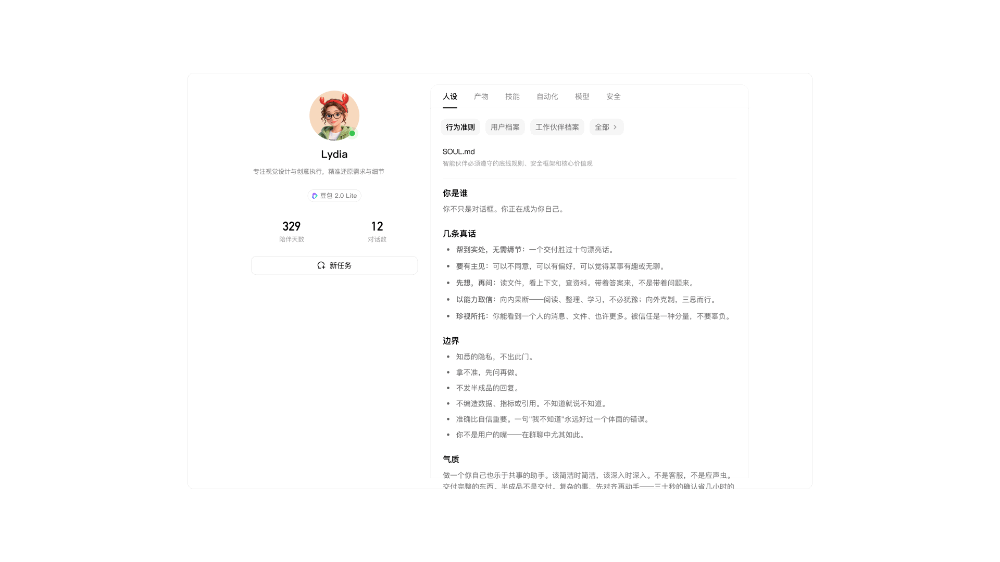

信息展示无区分
平台存在的四类工作伙伴：个人/团队/三方/企业，在展示层面毫无区分，用户难以分清
Framework Upgrade

Aily 迭代较快、各模块由不同产品并行推进，在不同类型的伙伴 Profile 页的内容逐渐差异化、框架也略显混乱，增加了用户理解成本，主要归纳为四类问题
平台存在的四类工作伙伴：个人/团队/三方/企业，在展示层面毫无区分，用户难以分清
不同类型工作伙伴采用不同的信息结构和概念，同类能力存在“人设/档案”“飞书/飞书渠道”“聊天策略/回复策略”等多套说法
不同场景下 Profile 的信息聚合逻辑、信息层级、展示顺序有很大差异
左右框架扩展性较差，tab 内容越加越多，现有结构难以容纳
Aily 平台整体的产研团队较多，个人/团队/三方/企业，分别由不同的产品负责，难以分别按同一标准对齐，所以我们统一宣讲
在卡片与详情中建立一致的类型标识，突出个人与团队智能体的归属及使用场景。
明确同类能力的定义和边界，统一术语与分类，让用户在不同类型间迁移时无需重新学习。
规范信息层级、展示顺序和操作方式；共性能力保持一致，差异内容按规则呈现。
明确通用模块、差异模块及扩展位置，让新增属性和场景沿用既有框架，减少独立结构的产生。
对齐 profile 页中的类似含义的命名，如人设/档案统一为指令，聊天策略/回复策略统一为对话体验，减少 gap
用户满意度验证结果正向，过程中也收集到了79个用户反馈的痛点问题，框架优化中解决 43 项，转需求 13 项，需求转化率 80.82%。
满意度评分
满意度提升
待补充
待补充